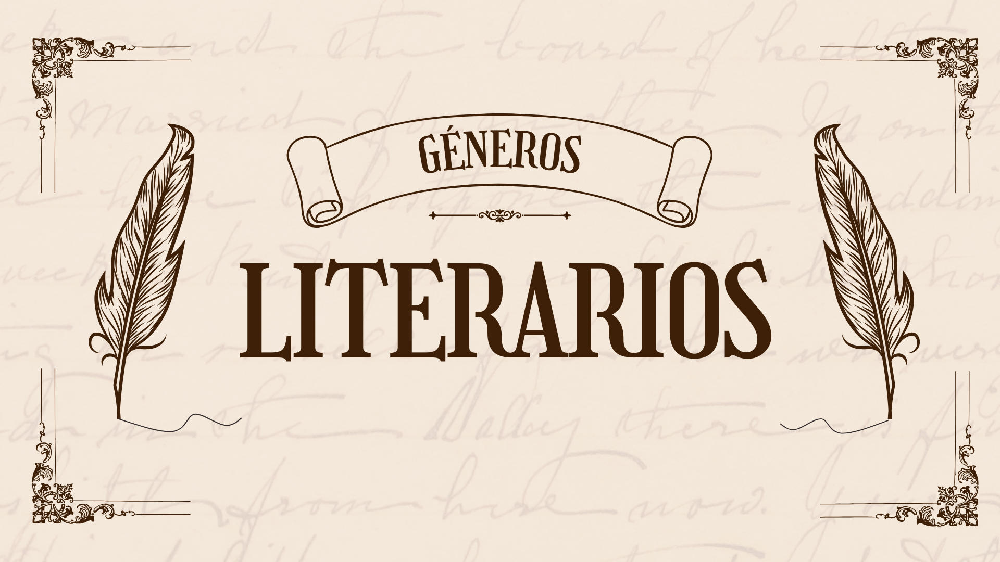

GÉNEROS LITERARIOS
QUÉ SON LOS GÉNEROS LITERARIOS
Los géneros literarios son categorías que agrupan obras literarias según sus características y formas de expresión. Permiten clasificar y organizar la diversidad de textos literarios en función de sus elementos comunes, como la estructura, el contenido, el estilo y la finalidad. Los principales géneros literarios son el narrativo, el lírico y el dramático. Cada uno de estos géneros tiene sus propias características distintivas y se utiliza para diferentes propósitos creativos y comunicativos dentro de la literatura.
INTRODUCCIÓN
Los géneros literarios, como el dramático, lírico y narrativo, son categorías que agrupan obras
literarias según sus características y formas de expresión. Cada uno de estos géneros tiene particularidades que los distinguen
y les otorgan un propósito específico en la creación artística y la comunicación de ideas y emociones.
El género dramático se centra en la representación de conflictos a través del diálogo y la acción de los personajes,
con el objetivo de ser representado en un escenario teatral. Por su parte, el género lírico se caracteriza por la expresión
subjetiva de sentimientos, pensamientos y emociones del autor, a menudo en forma de poesía, donde prima la musicalidad y la
belleza del lenguaje. Finalmente, el género narrativo se enfoca en contar una historia a través de la narración de hechos y
acciones, con personajes que se desarrollan en un tiempo y espacio determinados.
Cada uno de estos géneros literarios tiene su propio estilo y estructura, permitiendo a los escritores explorar diferentes
formas de expresión y conectar con los lectores de maneras diversas. La diversidad de los géneros literarios enriquece el mundo
de la literatura y ofrece una amplia gama de posibilidades creativas para quienes desean explorar el arte de la palabra escrita.

CARACTERÍSTICAS
- *Género Narrativo:* Se caracteriza por la narración de una historia a través de la descripción de hechos, acciones y situaciones que involucran a personajes en un tiempo y espacio determinados. Suele incluir elementos como la trama, los personajes, el narrador, el punto de vista y el desarrollo de los acontecimientos. Ejemplos comunes son la novela, el cuento y la epopeya.
- *Género Lírico:* Destaca por la expresión subjetiva de emociones, sentimientos y pensamientos del autor. Se enfoca en la belleza del lenguaje, la musicalidad y la exploración de las sensaciones íntimas. La poesía es el formato más representativo de este género, donde se emplean recursos literarios como metáforas, símiles y ritmo para transmitir emociones.
- *Género Dramático:* Se caracteriza por la representación escénica de conflictos a través del diálogo y la acción de los personajes. Está diseñado para ser representado en un escenario teatral y suele incluir elementos como los actos, las escenas, los diálogos y las acotaciones. El objetivo principal es crear una experiencia teatral que conecte con el público a través de la interpretación de los actores.
Estas son las características generales de cada uno de los géneros literarios más comunes. Cada uno ofrece diferentes enfoques y posibilidades creativas para los escritores en función de sus intenciones artísticas y comunicativas.